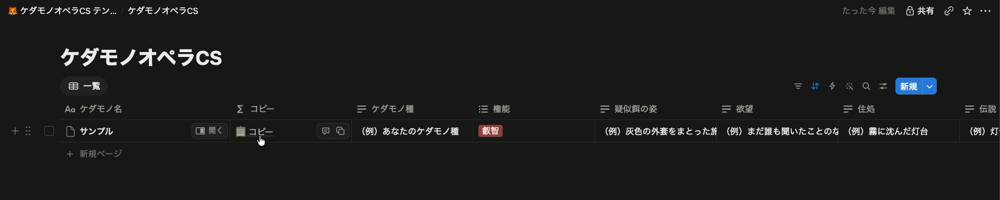
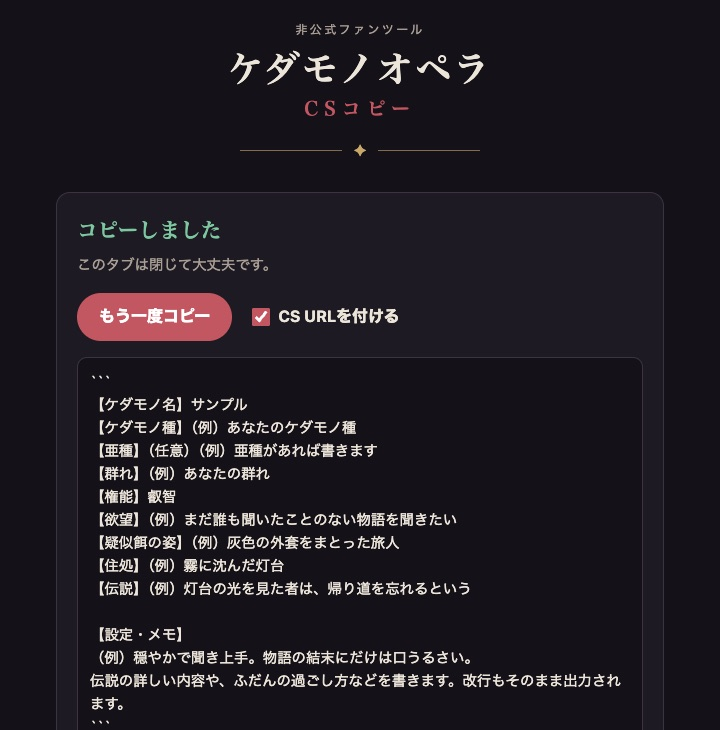
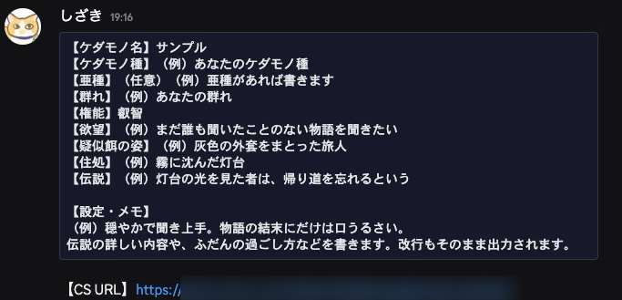

使うときの流れ
-
Notion で CS を管理する
テンプレートの表に、ケダモノ名・ケダモノ種・権能・欲望などを書き込みます。1行が1体のケダモノです。

テンプレートを複製したところ。「コピー」の列を押します。 -
「📋 コピー」を押す
コピー用のページが開いて、CS が Discord 向けの形でクリップボードに入ります。CS の内容はリンクの中だけで受け渡され、サーバーには送られません。

-
Discord に貼る
そのまま貼り付けるだけで、コードブロックで囲まれた読みやすい CS になります。最後に CS のページへのリンクも付きます。

実際に貼り付けたところ。CS の URL はぼかしています。
できること
公式のシートと同じ順番
ケダモノ名から設定・メモまで、公式のケダモノシートの順で出力します。空欄の項目は出しません。
プレイ中に変わる欄は出さない
受難ポイント・予言・特技など、セッション中に変わる欄は出力しません。
CS の URL を付ける
Web 公開した URL を一度設定すれば、どのケダモノにも公開 URL が付きます。付けずにコピーもできます。
改行もそのまま
設定・メモに書いた改行は、そのまま Discord に出ます。
安全性について
- CS の内容はリンクの
#以降で受け渡すので、サーバーには送られません。ただし、リンクそのものに CS の内容が入るので、リンクを共有すると内容も伝わります。 - 公開 URL の設定は、使っているブラウザの中にだけ保存します。
- Web 公開や共有をしていない Notion のページは、ほかの人には開けません。
はじめかた
- Notion テンプレートを、自分のワークスペースに複製する
- 表にケダモノを追加する
- 「📋 コピー」を押して、Discord に貼り付ける
テンプレートを使わずに自分で表を作る方法や、CS の URL を公開 URL にする方法は、GitHub の README にまとめています。
『ケダモノオペラ』（著：池梟リョーマ／新紀元社）のファンが作成した非公式ツールです。公式とは関係ありません。ルールブックの本文は含みません。
公式のガイドラインに沿って公開しています。